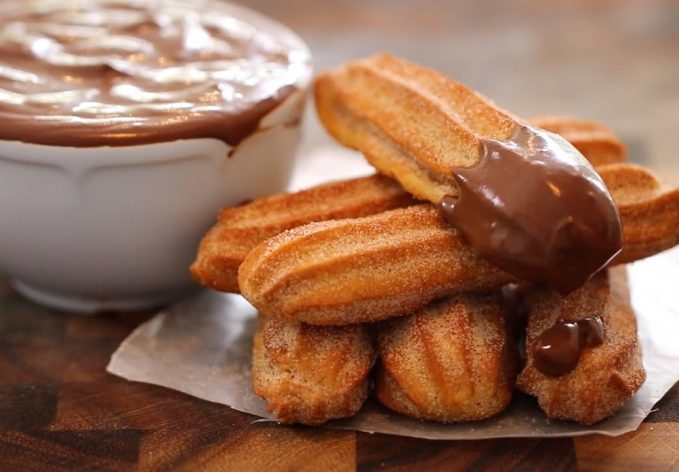

Churros Assados
da cozinha da mãe do Sandro

Descrição
Uma receita de churros assados, para comer os as compatas e chocolates preferidos.
Tem o bónus de não serem tão caloricos quanto os churros fritos.
Ingrdientes
- 240ml (malga) de água
- 100gr de manteiga (duas colheres cheias)
- 2 colheres de sopa de açúcar amarelo
- 1 pitada de sal
- 120gr (1 malga) de farinha
- 1 a 2 ovos
- 1 colher de sopa de extracto de baunilha ou 2 cascas de limão
Preparação
- Pré-aquecer o forno a 200º.
- Coloca-se a água, a manteiga, o sal, o açucar e a baunilha (ou limão) numa panela e leva-se a ferver, misturando bem.
- Assim que ferver, desliga-se e junta-se a farinha (de uma vez).
- Espera-se um pouco enquanto a farinha coze na temperatura da água.
- Mistura-se bem até a massa não se colar às mãos e se soltar da panela.
- Espera-se que arrefeça um pouco e juntam-se os dois ovos, um a um.
- Volta-se a misturar bem com uma espátula ou uma colher.
- Coloca-se a massa num saco de confeitar e fazem-se os churros, sobre papel vegetal.
- Leva-se ao forno por cerca de 20 minutos, ou até dourar.
Não te esqueças de polvilhar com açúcar e canela em pó e servir com o tem creme preferido, no meu caso, Nutella.Bom proveito!
Voltar à página principal